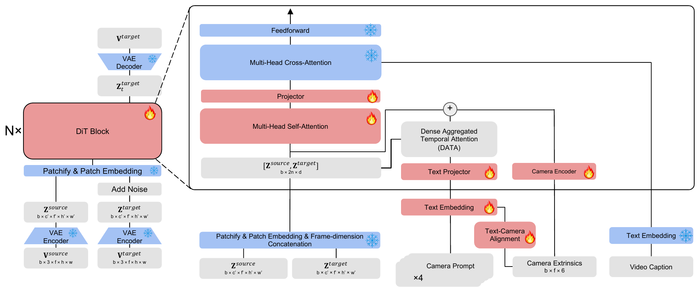
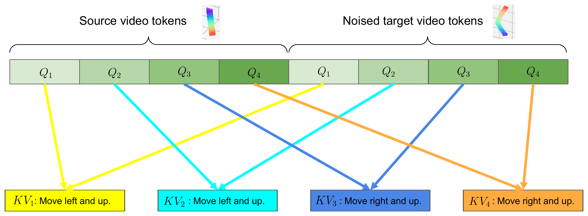

Overview of CamPrompt. Given a source video, its caption, and a simple user-provided
text instruction of camera movement, CamPrompt re-shoots the source video at a new camera
trajectory described by the text instruction. There is no need for complex control formats such as camera
parameters or flow maps.
“Move up while tilting down, then zoom out.”
Source videoCamPrompt
“Zoom in, then zoom out.”
Source videoCamPrompt
CamPrompt re-shoots an existing video along a new camera trajectory,
described in a single plain-text instruction.
Abstract
Controlling camera motion is essential for video generation, as it offers creators a powerful
cinematic tool for shaping visual narratives. However, existing camera-controlled video generation
models rely on complex and opaque control formats that are inaccessible to everyday users. In this
work, we introduce CamPrompt, a video-to-video generation model that enables natural camera control
through a single text prompt. Given a source video, its caption, and a simple text instruction
describing the desired camera motion (e.g., “Turn the camera to the right.”), CamPrompt
re-shoots the video from a novel camera trajectory specified by the instruction. We annotate a high
quality multi-camera video dataset with natural language descriptions of camera movement for
training (released below), and design a novel dense prompt conditioning
strategy and a text–camera alignment module for effective control. Extensive experiments show
that CamPrompt attains strong visual quality and accurate camera control, with a 6.7% decrease in FVD
compared to the state-of-the-art approach while generalizing robustly across complex instructions.
CamPrompt represents a step toward more user-accessible and intuitive controlled video generation.
Complex Camera Trajectories from One Prompt
Multi-step instructions are expanded by the LLM rewriter into dense camera prompts and 6-DoF extrinsics.
Each pair shows the source clip (left) and CamPrompt's output (right).
“Move backward, then move up.”
“Turn left, then turn back to the origin.”
“Move up while tilting down, then zoom in.”
“Move up while tilting down, then move right while turning left.”
“Move left and forward while turning right, then move up and tilt down.”
“Move right and forward while turning left, then move up while tilting down.”
“Move left while turning right, then move all the way to the right while turning left.”
“Move up, right, and forward, then move left, down, and backward while turning right.”
“Hold still.”
Basic Camera Trajectories
The 10 preset trajectories used for quantitative evaluation, one example each.
Each pair shows the source video (left) and CamPrompt's output (right) for the camera prompt above it.
Source videos are from Pexels.
“Turn right.”
“Turn left.”
“Tilt upwards.”
“Tilt downwards.”
“Move forward.”
“Move backward.”
“Move up and tilt downwards.”
“Move down and tilt upwards.”
“Move left and forward while turning right.”
“Move right and forward while turning left.”
Method

CamPrompt builds on a Wan2.1 text-to-video diffusion transformer and conditions on the source video by
concatenating source and target video tokens along the frame dimension.
Dense camera prompts. Instead of one global camera prompt, the model takes four dense
prompts, each describing the camera motion over one quarter of the video. At inference the user
still writes a single instruction; an LLM rewriter expands it into the dense format.
Dense Aggregated Temporal Attention (DATA). Source and target tokens are split into four
temporal chunks, and the i-th chunk cross-attends only to the i-th camera prompt.
Simple 6-DoF camera extrinsics. During training, the model also receives the trajectory as
six numbers per frame (roll, pitch, yaw, x, y, z). At inference, a second LLM rewriter produces
these values from the user's instruction.
Text–camera alignment. Camera prompt embeddings are explicitly aligned with the
corresponding camera extrinsics so the text encoder better reflects camera-motion semantics.

Dense Aggregated Temporal Attention: each temporal chunk of
the source and target video attends to its own camera prompt.
Dataset: Camera-Motion Text for MultiCamVideo
We release the text annotations used to train CamPrompt: a caption and four dense camera
prompts for every training video of the
MultiCamVideo dataset
from ReCamMaster (13.6K Unreal Engine 5 scenes, each
rendered by 10 cameras). Each camera trajectory is split into four consecutive segments, the relative
6-DoF motion of each segment is computed from the dataset's camera extrinsics, and Gemini 2.5 Flash turns it
into a short instruction; captions are also generated with Gemini 2.5 Flash. The annotations are keyed by video path, so they join directly to the original
dataset. Videos are not included; download them from the original dataset.
We also release a single camera prompt per video, which summarizes the whole trajectory in one
instruction. It was not used to train CamPrompt; we provide it for anyone who prefers one prompt per
video over four.
File
Rows
Columns
captions.csv
136,000
file_name, caption
camera_prompts_dense.csv
136,000
file_name, segment_1 … segment_4
camera_prompts_single.csvnot used for training
136,000
file_name, camera_prompt
Example: four cameras of one scene
Tilt downwards.
Tilt downwards.
Tilt downwards.
Tilt downwards.
Single prompt: “Tilt the camera downwards.”
Move downward and forward while tilting upwards.
Move downward and forward while tilting upwards.
Move downward while tilting upwards.
Move downward while tilting upwards.
Single prompt: “Move the camera downward and slightly forward while tilting it upwards.”
Arc left and forward while turning slightly right.
Arc left and forward while turning right and rolling slightly clockwise.
Arc left and forward while turning sharply right and rolling clockwise.
Turn extremely right and roll heavily clockwise while moving sharply left.
Single prompt: “Move left and slightly forward while rolling clockwise and turning right.”
Move left, forward, and slightly down while rolling clockwise, tilting up, and turning right.
Move left, forward, and down while rolling clockwise, tilting up, and turning right.
Move right, up, and forward while rolling counter-clockwise, tilting down, and turning left.
Move right, up, and forward while rolling counter-clockwise, tilting down, and turning left.
Single prompt: “Arc left and down while moving forward and turning right. Then arc right and up, continuing forward and turning back left.”
Caption (train/f35_aperture2.4/scene26/videos/cam02.mp4):
“The video shows a man wearing a yellow button-down shirt and dark pants standing on a weathered
wooden dock above turquoise water. He begins in a standing position and then crouches while extending
one arm out to the side, maintaining a serious expression. In the background, there is an island with
…”
Numbered lines: the four segment prompts used for training. Single prompt: the
alternative one-prompt annotation (not used for training). Videos: MultiCamVideo dataset (Apache-2.0), train/f35_aperture2.4/scene26,
cameras 02, 04, 06, 09.
import pandas as pd
captions = pd.read_csv("captions.csv")
prompts = pd.read_csv("camera_prompts_dense.csv")
annotations = captions.merge(prompts, on="file_name")
# optional, not used for training: one camera prompt per video
single = pd.read_csv("camera_prompts_single.csv")
# video: <MultiCamVideo-Dataset root>/<file_name>
License. The annotations are released under
CC BY 4.0. The MultiCamVideo videos and camera
data are not part of this release and remain under their original
Apache-2.0 license.
All annotations are machine-generated with Gemini 2.5 Flash and may contain errors. If you use them, please also cite
ReCamMaster.
BibTeX
@inproceedings{liu2027camprompt,
title = {CamPrompt: Camera-Controlled Video-to-Video Generation from Text Prompt},
author = {Liu, Xinhao and Chen, Kan and Zhong, Yuan and Jin, Pengchong and
Xu, Yan and Chen, Zhuoyuan and Yu, Ting},
booktitle = {Proceedings of the IEEE/CVF Winter Conference on Applications of Computer Vision (WACV)},
year = {2027}
}